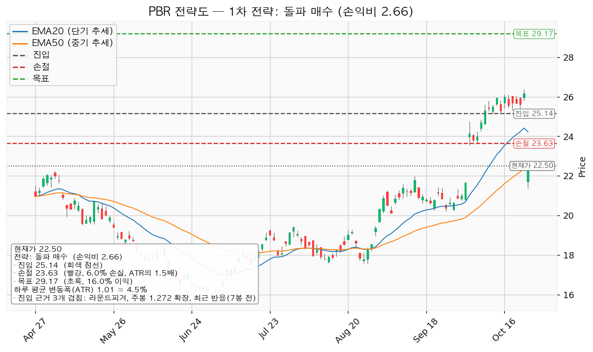
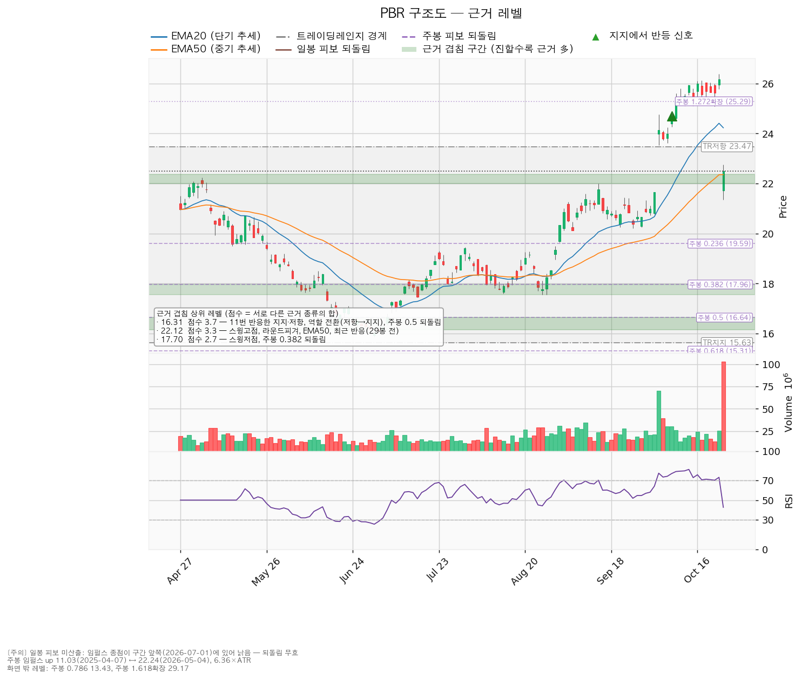
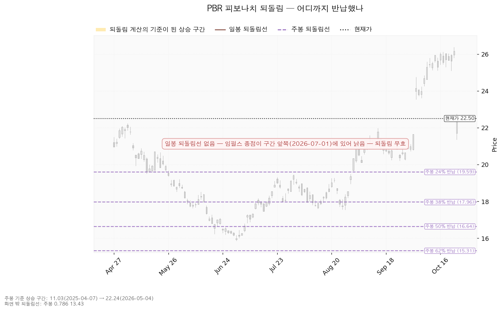
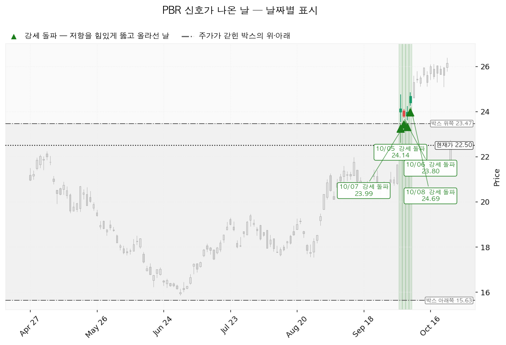

페트로브라스(PBR)는 브라질 정부가 지배주주인 석유 기업으로, 심해 원유·천연가스 생산과 정제를 합니다. PBR은 뉴욕증시에 상장된 예탁증서입니다.
| 선 | 가격 | 판정 방식 | 현재 상태 | 뜻 |
|---|---|---|---|---|
| 회복선 | 25.14달러 (+11.73%, 2.62 ATR 위) | 일봉 종가 돌파 | 미돌파 | 대표 셋업 진입 조건. 라운드피겨 25달러 + 주봉 1.272 확장 25.29달러 + 7봉 전 반응 |
| 집행 손절 | 23.63달러 | 장중 저가 도달 | 해당 없음 | 25.14달러 진입분에만 유효. 미진입자에게는 무의미 |
| 관망 종료 기준 | 21.00달러 (-6.67%) | 일봉 종가 이탈 | 유지 중 | 매수 계획 종료. 21.00~21.43달러(9월 23일 스윙고점 + 라운드피겨 + 23봉 전 반응) 하단 |
| 확인선 | 22.12달러 (-1.69%) | 일봉 종가 돌파 후 되돌림 지지 | 돌파 상태, 10월 26일 되돌림 시험 중(장중 저가 21.35달러) | 9월 15일 스윙고점 + 라운드피겨 22달러 + 50일선. 박스 상단 23.47달러는 그 위 맥락 |
| 폐기선 | 15.63달러 (-30.53%, 하루 평균 변동폭의 6.81배) | 이탈 후 3거래일 내 회복 실패(또는 그 전에 14.62달러 아래 종가) + 반등에서 저항 확인 | 유지 중 | 180봉 박스 하단. 실무상 작동하지 않으며, 미진입자가 볼 선은 21.00달러 관망 종료 기준입니다 |
거래량 강도 통과는 돌파 거래량이 아니라 10월 26일 갭 하락일의 매도 거래량(1억 249만주)에서 나왔습니다. 25.14달러를 넘는 날의 거래량은 그날 따로 확인하십시오.
| 항목 | 값 |
|---|---|
| 이름 / 엣지 | 돌파 매수 · 모멘텀(저항을 돌파하면 그 방향이 이어진다는 전제). 자주 틀리고 소수가 크게 맞는 유형이며, 이 엔진에서 잰 승률은 없음 |
| 진입 | 25.14달러 일봉 종가 돌파 (+11.73%) |
| 진입 근거 | 라운드피겨 25달러 + 주봉 1.272 확장 25.29달러 + 7봉 전 반응 (25.00~25.29달러) |
| 집행 손절 | 23.63달러 — 진입 아래 가까운 겹침 구간이 없어 진입에서 ATR의 1.5배 아래(-6.02%) |
| 목표 | 29.17달러에서 전량 매도 (목표 도달). 근거는 주봉 1.618 확장 하나 |
| 손익비 / 구조 증명도 | `1:2.66` (손절 1.5 ATR) / 돌파 확인형 |
대표로 고른 이유: 손익비 2.66 × 돌파 확인형 × 진입 근거 세 개 겹침이며, 상대강도·거래량으로 순위에 1.141배가 곱해졌습니다. 그중 거래량 몫은 위의 하락일 거래량이지만, 눌림 매수 후보(선취형, `1:2.21`)와 순위 차이가 커 이를 빼도 순서는 바뀌지 않습니다. 손절 자체가 구조적 손절이라 구조적 손익비가 따로 나오지 않습니다. 엣지와 청산이 어긋난다는 경고는 산출되지 않았고, 모멘텀 전제이지만 집행은 고정 목표 전량 매도이며 29.17달러 이후 구간은 새 셋업으로 다시 잡습니다. 진입~목표 3.99 ATR이나 집행 정책상 단일 청산입니다. 진입가가 현재가보다 위에 있는 조건부 셋업이라 추격 문제는 없습니다.

| 단계 | 트리거 | 행동 |
|---|---|---|
| 관찰 | 일봉 종가가 25.14달러 아래로 마감 | 신규 진입만 중단. 손절은 그대로 |
| 경고 | 이탈 후 3거래일 안에 25.14달러를 종가로 회복하지 못함, 또는 그 전에 일봉 종가가 24.13달러 아래로 마감(하루 평균 변동폭 1배만큼 더 밀림) — 둘 중 먼저 오는 쪽 | 박스 재진입 우세. 반등에서의 반응 확인 |
| 무효 | 반등이 25.14달러에서 막히고 그 아래로 되밀림(지지가 저항으로 전환) | 셋업 폐기, 새 구조가 생길 때까지 관망 |
장중 일시 이탈은 어느 단계에도 해당하지 않으며, 집행 손절 23.63달러는 단계와 무관하게 따로 작동합니다. 폐기선 15.63달러는 6.81 ATR 떨어져 있어 논지 무효화는 2026-11-11 실적으로 겁니다: 내년 EPS 컨센서스 4.14달러가 실적 뒤 하향으로 돌아서면 논지가 틀린 것으로 봅니다.
| 가격대 | 겹치는 근거 |
|---|---|
| 25.00~25.29달러 | 라운드피겨 + 주봉 1.272 확장 + 7봉 전 반응 (진입) |
| 23.00~23.47달러 | 박스 상단 + 라운드피겨 |
| 21.99~22.36달러 | 스윙고점 + 라운드피겨 + 50일선 + 29봉 전 반응 (확인선, 현재가 바로 아래) |
| 21.00~21.43달러 | 스윙고점 + 라운드피겨 + 23봉 전 반응 (관망 종료 기준) |
| 19.28~19.59달러 | 스윙고점 셋 + 스윙저점 + 주봉 0.236 되돌림 |
| 16.15~16.64달러 | 11번 반응한 가격대(저항에서 지지로 바뀐 자리) + 주봉 0.5 되돌림 |
751일치 일봉에서 40·90·180봉 창을 시험해 가격을 88.3% 가둔 180봉 박스(15.63~23.47달러)가 선택됐고, 가격은 11.31~14.35달러 박스에서 위로 올라와 들어왔습니다. 박스 안쪽은 지지 테스트 거래량 증가 · 저점 절상 · 상승봉 거래량 1.16배로 중립입니다. 10월 5~8일 강세 돌파 신호로 박스 상단 위에 올라섰던 가격이 브라질 대선 결선 결과(룰라 당선, CNBC·로이터 보도) 뒤 10월 26일 전일 종가 26.16달러에서 시가 21.71달러로 갭 하락, -13.99%인 22.50달러로 마감하며 박스 안에 되돌아왔습니다. 이 하락은 하루에 3.63 ATR이며, 엔진은 이 봉을 별도 신호로 산출하지 않았습니다.

일봉 되돌림은 기준 상승 구간의 끝이 7월 1일로 낡아 이번엔 계산되지 않았습니다. 주봉 기준(2025-04-07 11.03달러 → 2026-05-04 22.24달러)의 확장선 1.272(25.29달러)가 진입, 1.618(29.17달러)이 목표이며, 되돌림 0.5(16.64달러)는 위 표의 16달러대 지지에 겹칩니다.

신호일은 10월 5·6·7·8일의 거래량 실린 강세 돌파 넷(24.14 · 23.80 · 23.99 · 24.69달러)이며, 넷 모두 10월 26일 종가 아래로 되돌아갔습니다.

후행 PER 5.68배와 선행 PER 5.44배는 벌어지지 않았고, 올해 EPS 4.53달러는 +61.15% 성장, 내년 4.14달러는 -8.68% 감소가 예상됩니다. 목표주가는 13명 평균 23.95달러(+6.43%), 최저 17.40달러(-22.67%), 최고 31.00달러(+37.78%), 추천 매수이며 현재가는 최저와 평균 사이에 있습니다. 10월 26일 하락은 선거 결과에 따른 위험 프리미엄 재평가이고 추정치는 내년 EPS 90일 +0.6% · 30일 +3.8%, 올해 90일 +7.9% · 30일 +2.6%로 아직 오르고 있으나, 하락 하루 뒤라 추정치에 정책 변화가 반영됐는지는 확인되지 않습니다. 2025-12-31 결산 기준 영업현금흐름 360억 4,700만달러, 설비투자 195억 2,100만달러(+33.3%), 잉여현금흐름 165억 2,600만달러로 흑자입니다. 평균 목표는 내년 EPS 기준 5.79배로 현재 5.44배 대비 상승분이 배수 확장에서 오며, 내년 이익은 줄어드는 것으로 추정돼 있습니다.
| 날짜 | 이벤트 | 볼 것 |
|---|---|---|
| 매 거래일 | 25.14달러 종가 돌파 여부와 그날 거래량 / 21.00달러 종가 이탈 여부 | 진입·계획 종료 조건 |
| 2026-11-11 | 3분기 실적 | 내년 EPS 컨센서스 방향, 새 정부 아래 배당·투자 계획 언급 |
다음 실적 이후 구간은 확인할 자료가 없습니다. 새 정부의 국영기업 정책은 이 CLI 자료로 판단할 수 없습니다.
엔진 산출은 1% 리스크 기준 계좌의 16.6%이나 13% 상한을 넘으므로 계좌의 13%로 제한하며, 이때 23.63달러 손절 시 손실은 계좌의 0.78%입니다. 하루 평균 변동폭이 주가의 4.49%라 8% 기준에 해당하지 않지만, 10월 26일처럼 시가가 하루 평균 변동폭의 3배 넘게 벌어져 열리면 손절이 23.63달러보다 아래에서 체결됩니다. 11월 11일 실적 전에 진입하면 같은 위험이 실적에 한 번 더 걸립니다. 판정은 25.14달러 돌파 매수 대기 `1:2.66`, 미달 항목은 20일선 위 · 상대강도선 신고가입니다.
ATR: 하루 평균 변동폭(14일).
EPS: 주당순이익.
PER: 주가 ÷ 주당순이익. 후행은 지난 12개월, 선행은 향후 12개월 추정 이익 기준.
되돌림·확장: 앞선 상승분을 비율로 나눈 선. 확장은 그 상승분을 고점 위로 연장한 값.